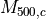
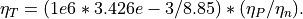

ICM Temperature models
If no temperature map is provided, then it is necessary to provide a temperature model in order to compute the different ICM observables (X-ray surface brightness, SZ effect temperature contrast, etc.). For purely lensing, this is not necessary.
Temp0 is the pivot temperature model, eq. (17) in
Allingham 2024:
.
It may be computed using routine predT:
predT0 <redshift> <model_type> <M_500,c>
where the mass
 is in
 , and the
, and the <model_type> corresponds to the regression used for
 . By default, use
. By default, use polyEv1 for the latter.
Jz_array indicates how to compute the Jz function, relating the potential to the ICM density
 .
It takes three arguments:
.
It takes three arguments:
An integer.
0: do not perform the computation.1: perform it.A string for the model type. By default, use
polyE. Other option ispolyA, which should be more up-to-date.A second string for the name of the output array. If the array is not computed (
0), this array must already exist.
The different temperature models are listed here:
polyEv1: uses the reduction of a polytropic temperature distribution, with a varying index. Reduction over 12 X-COP clusters. See parameters values in the table below.polyAv1: uses the reduction of a polytropic temperature distribution, with a varying index. Reduction over 12 X-COP clusters, and 3 strong lensing clusters’ XMM-Newton spectrocopic data. See parameters values in the table below.
The polytropic index model writes:
where
is the scaled Hubble factor at a cluster redshift
 .
Assuming the polytropic index
.
Assuming the polytropic index
 to vary with the ICM density,
to vary with the ICM density,
where

We specify the parameters of different models in the table below.
Id |
[cm ] |
|||
|---|---|---|---|---|
|
||||
|
4.61 |
1.02 |
-0.15 |